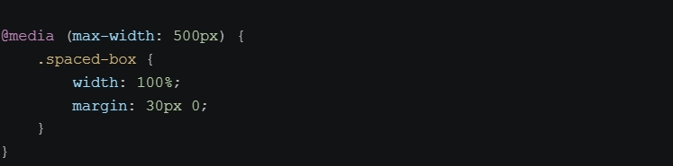
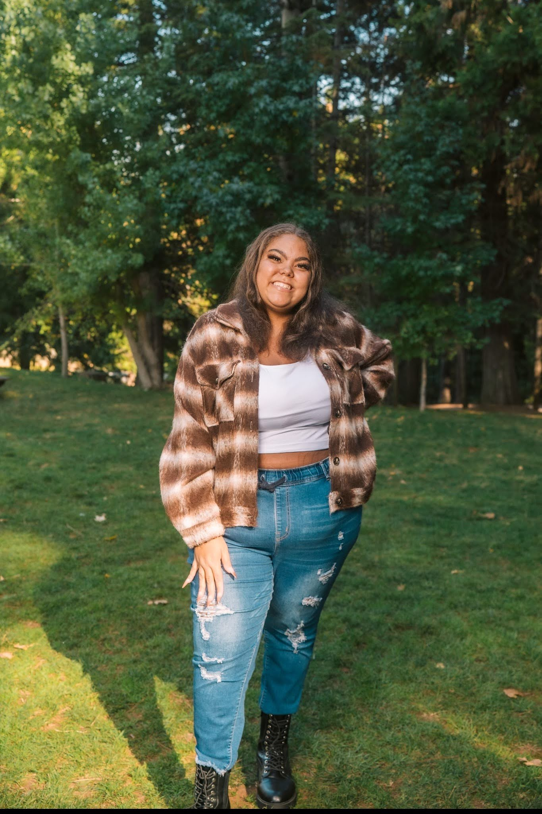

Flexbox
In a flexbox it will contain
- display: flex; padding: 16px;
- gap: 16px;
- flex-direction: row;
This week in class, we focused on styling and formatting our webpages. We learned how to use CSS flexbox to enhance the appearance of HTML content and how to structure code for better readability and maintainability like a book shelf. During Week 3, Mr. Reena taught us how to use CSS to organize a website using Flexbox and Grid. I also learned how to make a website adjust to different screen sizes, like phones, tablets, and computers using @media so it is easy to navigate on different devices. This helped me understand how to make websites look better and work across devices. I am still learning and building my confidence in coding.
This is an example of what the code @media query will look like and how it is applied to the page that we created this week in class.

Flexbox arranges items in a row or column. Like a parent container holding child elements, these 2 cards are arranged in a row using display: flex.
In a flexbox it will contain
In CSS, a CSS Grid organizes items into rows and columns. This grid uses display: grid and changes to one column on a phone. Here im going to add photos to show how the grid laysout the images on the screen



With that being said we can use CSS @media queries to make our layout responsive cleaner and Ultimaly user friendly for all devices.